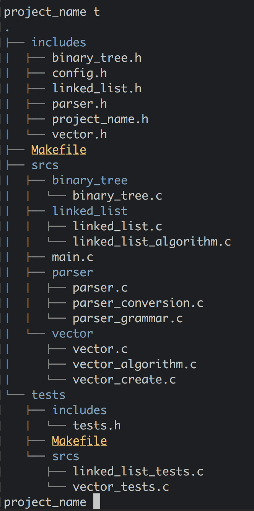
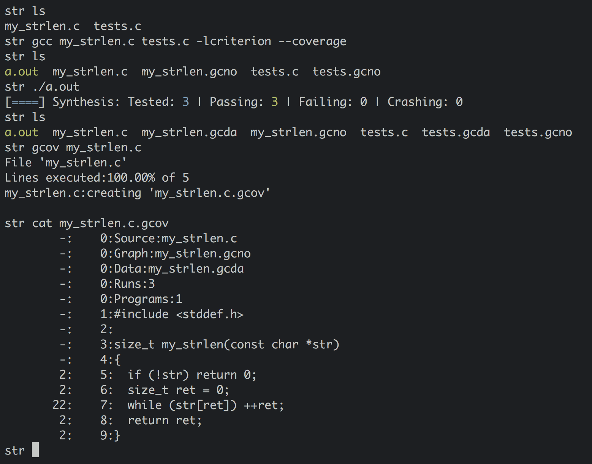
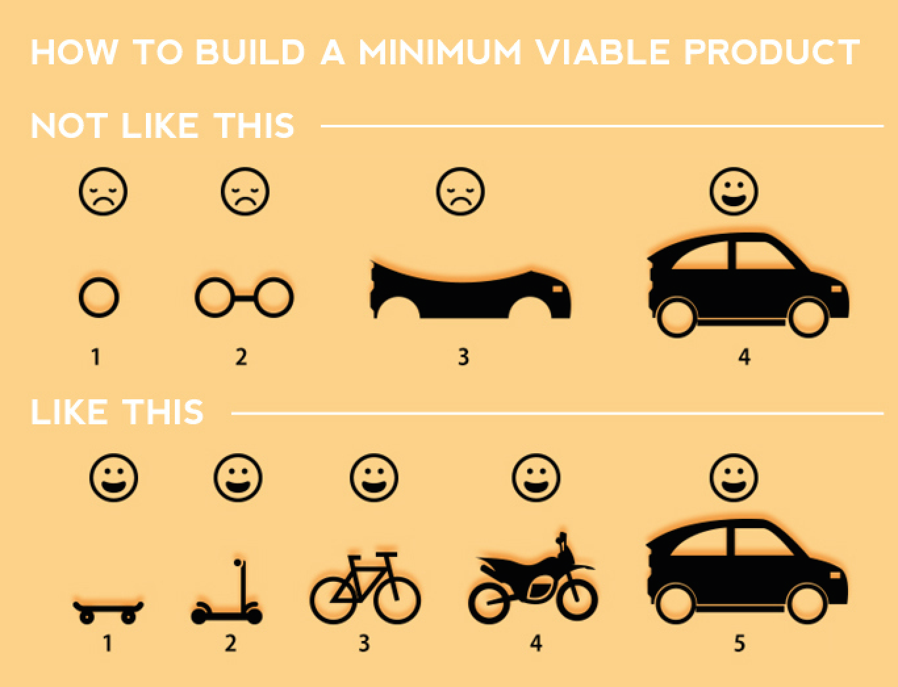
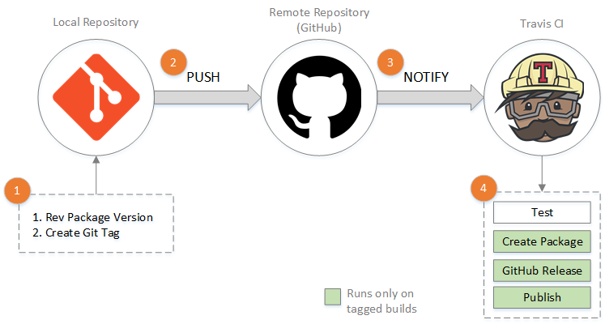

structure / build / test
code like real men do
Objectifs
Organiser son dépôt
Compiler son projet
Penser son architecture
Penser et écrire des tests
Organiser son dépot
Isoler les sources
Un compartiment par entité logique
Makefile à la racine
Les tests sont un projet en soi

Compiler son projet
Une nouvelle target:
tests
Adapter les autres targets
Makefile de tests transparent
make -C
Utilisez
.gitignore
Penser son architecture
Découpage
En entités logiques
Fonctionnel
Eviter les fonctions
static
pensez en boite noire
style UNIX : une fonction fait une chose, bien
Penser et écrire des tests
Un test valide un comportement
Ou un effet de bord
Par comparaison ou par anticipation
Un test n'a pas d'effet de bord
Les permutations
Les extremes
Les erreurs
Les crash
Le coverage
gcov
--coverage
-fprofile-arcs -ftest-coverage
gcdo / gcna / gcov

Test Driven Development
Ecrire le test
Le test est en échec
Valider un code minimal
Le test est en succès
Améliorer le code

Unitaire VS Intégration
D'autres outils
https://goo.gl/KtSLjb

Source : Jason Poon
Des questions ?
Merci !